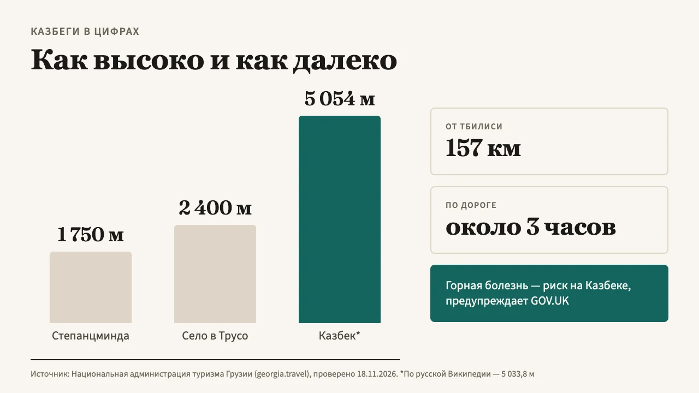
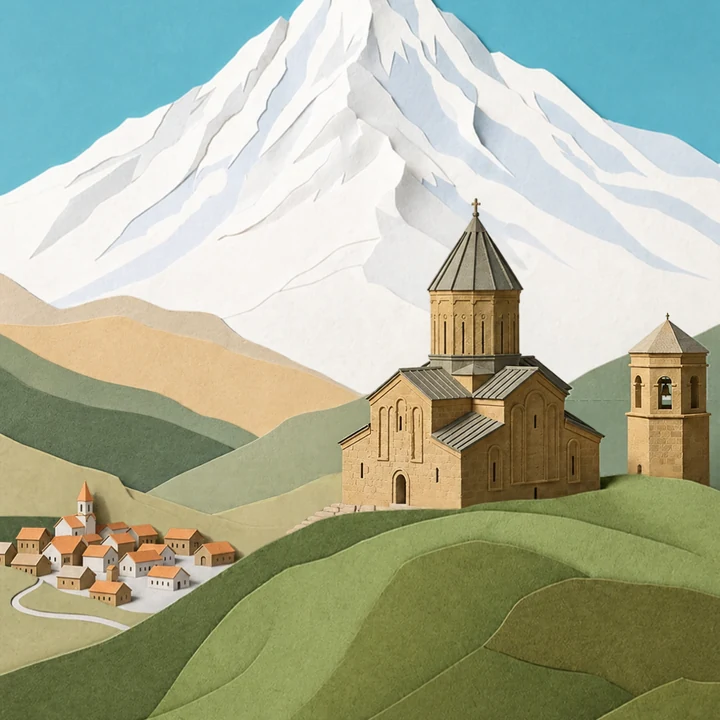
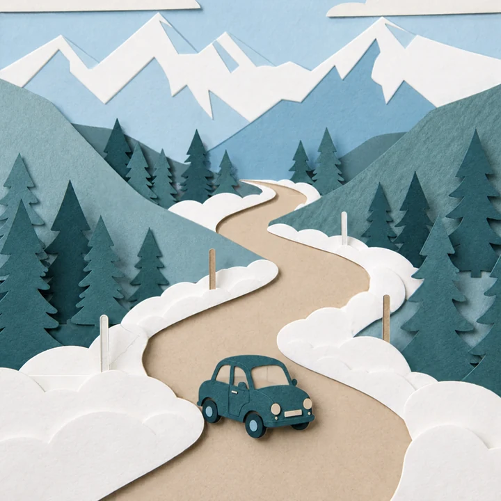
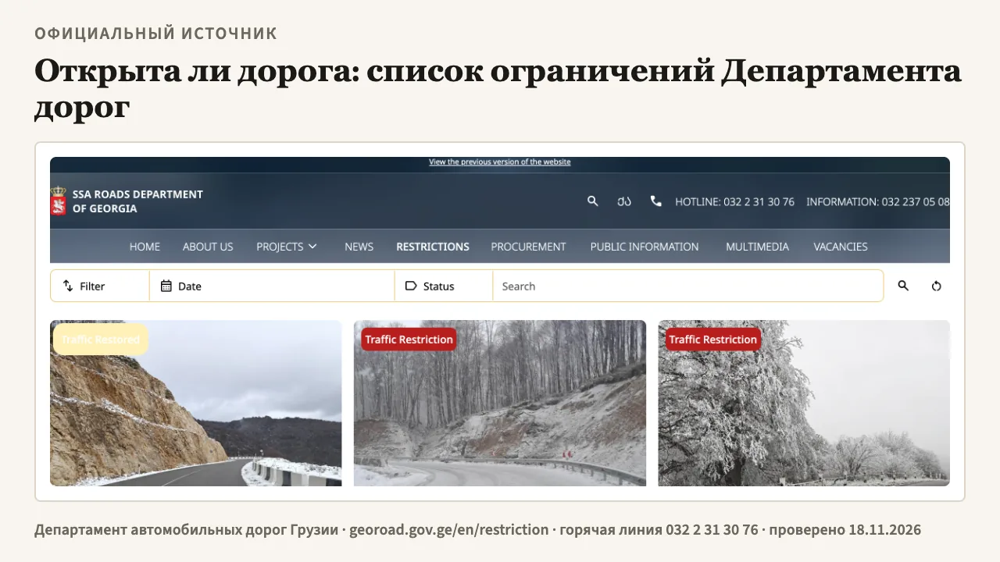
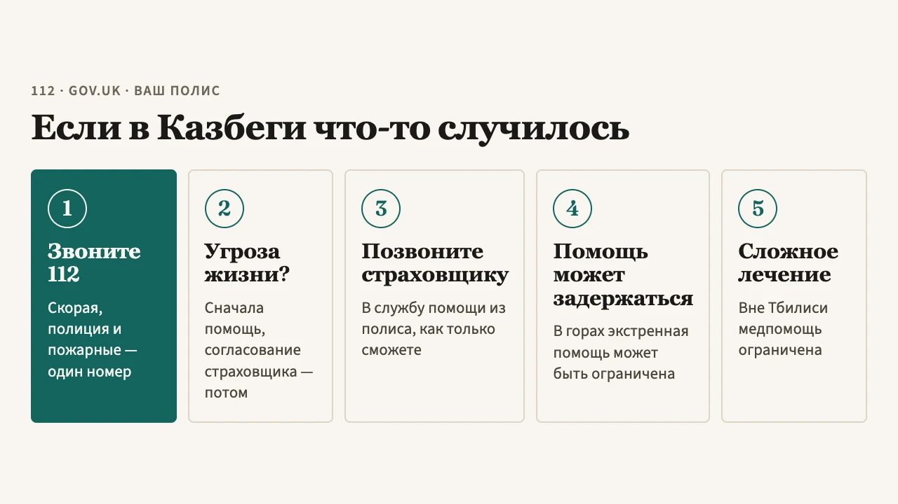

- Высота
- 1 750 м
- От Тбилиси
- 157 км
- В пути
- около 3 часов
- Казбек
- 5 054 м
Статья входит в справочник о медицине в Грузии. Проверено 18 ноября 2026 года.
Казбеги или Степанцминда: где это
Это одно место. Посёлок называется Степанцминда, а район вокруг — Казбегский муниципалитет (Министерство инфраструктуры Грузии).
Посёлок находится в регионе Мцхета-Мтианети, у подножия горы Казбек, на Военно-Грузинской дороге (georgia.travel).
Дальше на север, по Дарьяльскому ущелью, — граница с Россией и пункт пропуска Ларс. Если вы въезжаете в Грузию через Ларс со стороны Владикавказа, дорога на Тбилиси проходит через этот посёлок.
На въезде в Грузию нужен медполис на 30 000 лари — подробнее о правиле.
Высота Казбеги и горы Казбек
Посёлок — на 1 750 м над уровнем моря. Для вершины Казбека источники дают две разные цифры.
| Место | Над уровнем моря | Источник |
|---|---|---|
| Степанцминда, посёлок | 1 750 м | georgia.travel |
| Церковь Гергети | над посёлком; официальной цифры нет | — |
| Деревня в долине Трусо | 2 400 м | georgia.travel |
| Казбек, вершина | 5 054 м | georgia.travel |
| Казбек, вершина | 5 033,8 м, в Балтийской системе | русская Википедия |
Мы приводим обе. Казбек — третья по высоте гора Грузии (georgia.travel). Вершина стоит на границе: с грузинской стороны Мцхета-Мтианети, с российской — Северная Осетия (Википедия).

Горная болезнь: кому осторожнее
Тем, кто идёт выше посёлка: к леднику или на Казбек. Британский МИД называет гору Казбек среди мест риска горной болезни.
Коротко по памятке TravelHealthPro (на английском):
- обычно начинается выше 2 500 м, у некоторых людей — ниже;
- признак — новая головная боль плюс, например, тошнота, головокружение, слабость или усталость;
- не поднимайтесь выше и отдыхайте: часто всё проходит за 1–3 дня;
- хуже или нет улучшения за 1–2 дня — спускайтесь; тяжёлое состояние — срочно к врачу и вниз.
Поднимайтесь постепенно. Подробнее — о горной болезни и травмах (на английском).
Из Тбилиси в Казбеги по Военно-Грузинской дороге
Около трёх часов, 157 км на север. У Национальной администрации туризма путь из столицы — 2 часа 55 минут, без указания транспорта (georgia.travel).
По пути — крепость Ананури XVI века: у неё останавливается маршрут туристической администрации (четырёхдневный маршрут). Дальше дорога идёт через перевал Джвари — зимой в непогоду движение там бывает закрыто.
Как добираться — официальных цен и расписаний нет, поэтому их не приводим:
- Маршрутка из Тбилиси — время и место отправления уточняйте на месте.
- Такси или водитель — договоритесь о маршруте и остановках заранее.
- Экскурсия — если не хотите вести машину по горам.
- Своя машина — проверьте статус дороги, зимой — правила о шинах. Британский МИД предупреждает: дороги за пределами центров городов часто плохо освещены и в плохом состоянии.
Можно ли съездить за один день
Можно, но день длинный: около шести часов в машине туда и обратно. Национальная администрация туризма советует на спокойный визит хотя бы два-три дня (что посмотреть в районе). В один день — церковь и посёлок, без длинных маршрутов.
Троицкая церковь Гергети (Цминда Самеба)
Это храм XIV века на холме над посёлком, его ещё называют Гергетской Троицей. Национальная администрация туризма зовёт его «короной Степанцминды» (страница посёлка).

Как подняться: пешком, на такси или джипе
До церкви Гергети можно дойти пешком по дороге, доехать на такси или в джип-туре с гидом — так пишет georgia.travel.
Дорога новая: 30 ноября 2018 года Министерство инфраструктуры сдало подъездную дорогу от посёлка к церкви — 5,6 км, с цементобетонным покрытием.
Есть и тропа: туристическая администрация называет её «очень долгим и утомительным подъёмом». Официальной длины тропы и времени в пути нет.
Идите в своём темпе; новая головная боль — остановитесь и отдохните.
Что посмотреть в Казбеги: маршруты и ущелья
Достопримечательности вокруг посёлка перечисляет georgia.travel. Длины, времени и сложности маршрутов там нет — нет и у нас.
Гергетский ледник
Серьёзный высокогорный поход — к «дикой, нетронутой красоте Кавказа». Georgia.travel советует идти с подготовкой, возможно — с гидом. Британский МИД предупреждает: в походах экстренная помощь может быть ограничена.
Джута
Туристическая администрация называет долину «грузинскими Доломитами». С конца мая до октября здесь много туристов с рюкзаками (двухдневный маршрут).
Долина Трусо
Трусо — примерно в 22 км от посёлка: на внедорожнике, верхом или пешком (georgia.travel).
Возьмите паспорт: к деревне над крепостью Закагори нужно разрешение, рядом граница с Россией. Кто его выдаёт, не сказано — спросите на месте.
Водопад Гвелети
Лучше в конце лета или осенью: по georgia.travel, с августа по октябрь он особенно впечатляет.
Дарьяльское ущелье
К северу дорога идёт по Дарьяльскому ущелью к границе; недалеко от неё стоит Дарьяльский монастырь.
Восхождение на Казбек
Это экспедиция, а не прогулка: подъём уходит намного выше 2 500 м, где обычно начинается горная болезнь. Нужны опыт и подготовка.
Помощь может прийти не сразу. 5 апреля 2018 года МВД сообщило о травме иностранца — предположительно альпиниста — на Казбеке: из-за сложной погоды вертолёт, «несмотря на несколько попыток», не смог сесть и забрать пострадавшего.
Казбеги зимой: открыта ли дорога
Не всегда: в непогоду участок дороги в горах бывает закрыт. Британский МИД предупреждает: снег в горах может сделать поездку трудной или невозможной.

Открыта ли Военно-Грузинская дорога сегодня: где проверить
Смотрите официальный источник — Департамент автомобильных дорог Грузии:
- раздел «Ограничения» на georoad.gov.ge — есть грузинская и английская версии, русской нет; у каждой записи дата и время;
- горячая линия 032 2 31 30 76.
Например, 13 декабря 2024 года участок Гудаури — Коби закрыли «для всех видов транспорта» из-за непогоды, сообщал Первый канал Грузии. Это пример, а не статус на сейчас. Бывают и частичные ограничения — например, только для прицепов.
Ответы ИИ и посты в сообществах — не официальный статус. Очередь на пункте пропуска Ларс — отдельная тема.

Зимние шины и цепи
С 1 декабря по 1 марта на отдельных участках дорог нужны зимние шины, сообщает МВД Грузии. В непогоду полиция может потребовать цепи. Штраф — 100 лари и 5 штрафных баллов. Список участков МВД не приводит — в прокате просите зимние шины.
Лавины. Британский МИД: точные данные о лавинной опасности в горах получить трудно — спросите на месте.
Лыжи. Для лыж georgia.travel советует Гудаури — вот страница о Гудаури (на английском).
Безопасность и здоровье в Казбеги
Georgia.travel называет эти места «в целом довольно безопасными». Риски — от гор: погода, подъём и далёкая больница.
Медицина. «За пределами Тбилиси медицинские учреждения ограничены», пишет британский МИД. Больницу в посёлке в официальных списках мы не нашли.
112 — скорая, пожарные, полиция (GOV.UK). Отдельного номера горных спасателей мы не нашли. Вот как вызвать скорую по 112 (на английском).
В горах помощь может прийти не скоро. Укусила собака — что делать при укусе.

Страховка для поездки в Казбеги
С 1 января 2026 года на въезде нужен полис на 30 000 лари — этого требует Постановление Правительства Грузии №602 (подробнее).
Британский МИД советует проверить, что страховка покрывает ваши занятия и медицинскую эвакуацию.
Обычный полис может исключать спорт. Так, правила полиса IRAO (п. 9.1.22) не оплачивают травмы при профессиональном, любительском и экстремальном спорте. Пешие походы и альпинизм там не названы — спросите страховщика письменно до поездки. Эвакуация у IRAO — лимит 1 000 лари, только по согласованию заранее.
Турстраховка для поездки в Грузию с полисом IRAO подходит для въезда и обычной поездки. Альпинизм в правилах IRAO не назван, а любительский спорт исключён — перед восхождением на Казбек спросите страховщика письменно, покрывается ли оно. Полис действует для событий в его срок — оформляйте до поездки.
Если под угрозой жизнь — сначала 112: согласие страховщика нужно для оплаты, а не для помощи.
Частые вопросы
Казбеги и Степанцминда — одно и то же?
Да, это одно место: Степанцминда — название посёлка, а Казбеги — района, Казбегского муниципалитета.
Сколько ехать из Тбилиси в Казбеги?
Около трёх часов, 157 км по данным georgia.travel.
Можно ли съездить за один день?
Можно, но это около шести часов в машине. Для спокойного визита советуют два-три дня.
Открыта ли Военно-Грузинская дорога сегодня — где проверить?
На georoad.gov.ge, в разделе «Ограничения», или по горячей линии 032 2 31 30 76.
Какая высота у посёлка и горы Казбек?
Посёлок — 1 750 м. Казбек — 5 054 м по georgia.travel и 5 033,8 м по русской Википедии.
Где находится гора Казбек — в Грузии или в России?
На границе: с грузинской стороны — Мцхета-Мтианети, с российской — Северная Осетия.
Что делать, если в горах стало плохо?
Новая головная боль — не поднимайтесь выше и отдохните. Хуже — спускайтесь. Травма или тяжёлое состояние — 112.
Источники
- Национальная администрация туризма Грузии: четырёхдневный маршрут (расстояние, над уровнем моря) (на английском)
- Национальная администрация туризма Грузии: страница посёлка (храм, время в пути, вершина) (на английском)
- Национальная администрация туризма Грузии: что посмотреть в районе (на английском)
- Национальная администрация туризма Грузии: долина Трусо (на английском)
- Национальная администрация туризма Грузии: двухдневный маршрут (на английском)
- Министерство инфраструктуры Грузии: новая дорога к церкви, 2018
- Департамент автомобильных дорог Грузии: ограничения движения
- МВД Грузии: зимние шины с 1 декабря, 2024
- МВД Грузии: травма альпиниста на Казбеке, 2018
- Британский МИД: здоровье
- Британский МИД: безопасность
- Британский МИД: куда обращаться за помощью
- TravelHealthPro: памятка о горной болезни (на английском)
- Первый канал Грузии: участок Гудаури — Коби закрыт, 13 декабря 2024
- Русская Википедия: Казбек (вторичный источник)
Это справочная информация, а не медицинская консультация: лечение назначает врач. Проверено 18 ноября 2026 года.